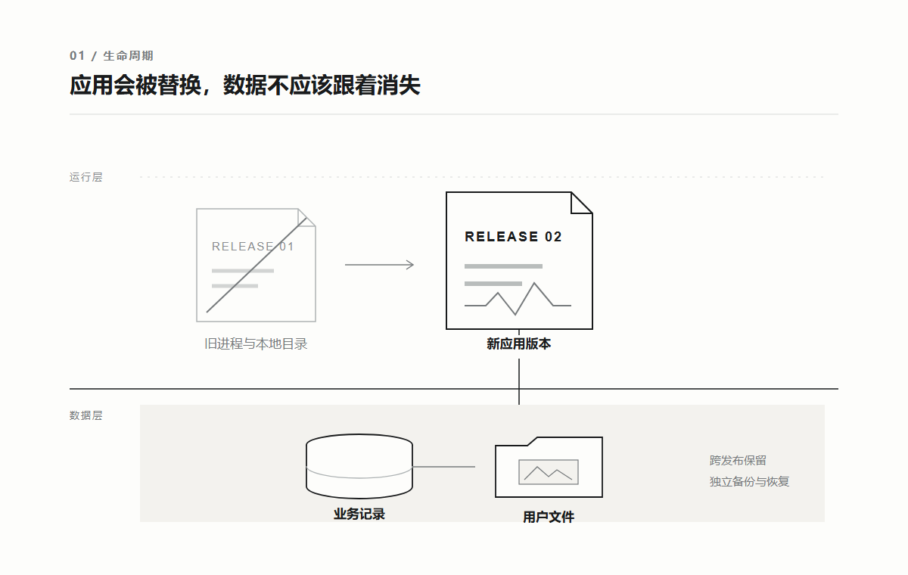
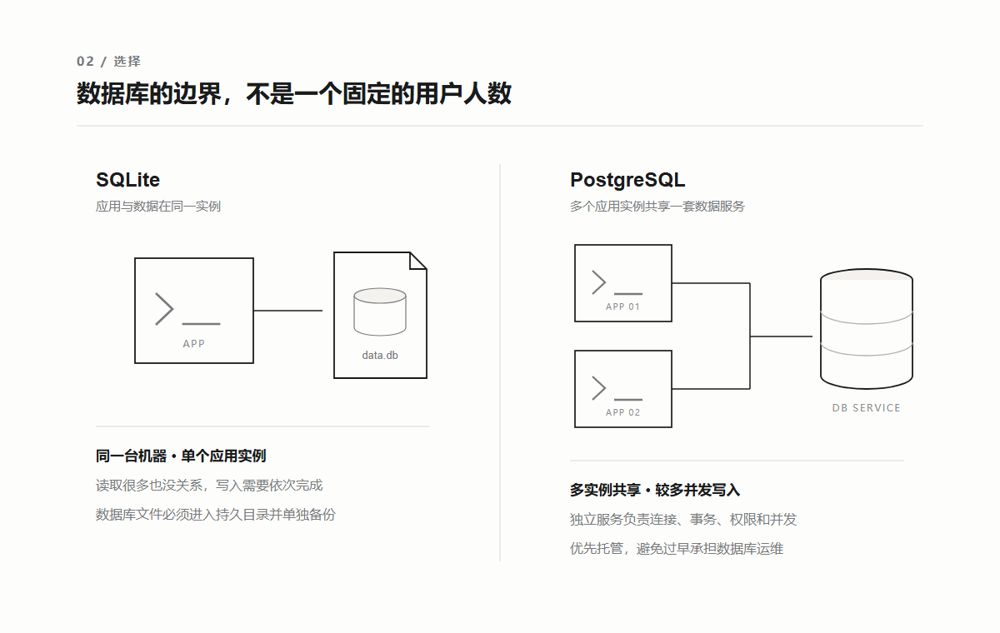
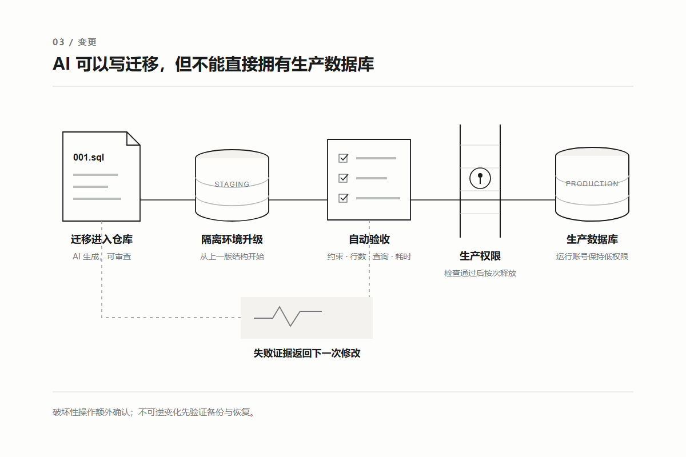

AI 写的项目，
数据到底该放在哪里？
2026 年 8 月 26 日 · AI 时代的基建 · 刘志宇 Joy
很多人让 AI 给项目增加登录功能，它很快就会建一张用户表，再顺手接上 SQLite。
让它增加文件上传，它会在项目里新建一个 uploads 目录，把图片写进去。
本地测试通常没有问题。
注册、登录、上传、刷新页面，每一步都能成功。
直到项目第二次部署。
运行环境被重新建立，用户记录和上传文件一起消失。
开发者开始怀疑部署平台、Docker 或数据库不稳定，但真正的问题更早就出现了。
AI 在没有数据边界的情况下，选择了最短的可运行路径。
页面代码丢了，可以从仓库重新构建。
用户数据丢了，仓库里没有第二份。
代码应该能够被替换，用户数据必须拥有独立于代码的生命周期。
这不是 AI 时代才出现的原则。
传统软件用了几十年建立数据库、备份、权限和变更制度，都是为了守住这条边界。
真正改变的是速度。
过去一周发生一次的数据库变更，现在 AI 几分钟就能生成；过去由 DBA 和发布窗口拦住的操作，现在一段指令就可能直接执行。
所以 AI 时代需要的不是更多数据库，而是把传统工程里的数据纪律，变成 AI 能读取、验证，却不能随意越过的系统。
01
传统软件先保护数据，再替换程序
传统项目并不是一开始就有微服务、分库分表和庞大的数据库团队。
个人软件常把数据放进本地文件或 SQLite；早期网站常用一台应用服务器和一套 MySQL、PostgreSQL；业务重要以后，才逐渐增加备份、只读副本、故障切换和专门的数据库管理员。
不同规模背后有一个共同结构：程序和数据被当成两种不同的东西。
程序是可替换的构建产物。
发布新版本时，可以停止旧进程、换成新文件，失败后再退回上一版。
数据是持续累积的业务状态。
订单、余额、权限关系和用户内容不能跟着程序一起回退，更不能因为换了一台服务器就从头开始。
关系数据库之所以长期成为业务系统的默认选择，不只是因为它能保存表格。
它用主键、唯一约束、外键和事务保护业务关系。
一次操作需要同时修改多条记录时，事务可以让它们全部成功，或者全部不生效。
PostgreSQL 对事务的定义就是把多个步骤组合成一个不可分割的操作。
传统企业还会把数据变更和普通代码发布分开管理。
开发者提交结构变化，DBA 检查锁表时间、索引、容量、备份和回退方案，再在发布窗口执行。
生产应用使用受限账号，建表、删列等操作交给权限更高但更少使用的账号。
这套方式不总是高效。
简单变化可能要经过很长的审批；人工在生产环境执行 SQL，也可能让真实结构与仓库记录不一致；有些团队会在还没有流量时就提前设计分片、双机和异地容灾。
但它保留下了三条不能丢的原则：数据有明确的事实源，结构变化留下记录，破坏性操作需要更高权限。
AI 时代应该替换缓慢的人工传递，不应该删掉这三条原则。
02
AI 加快的不是数据库，是变更频率
AI 很容易看见一段代码需要什么，却很难仅凭代码知道数据意味着什么。
它看见一个 status 字段，可以帮你改名、补索引或换成枚举。
但它不知道其中某个值是否对应已经履约的订单，也不知道删除一列会不会让两年前的数据无法解释。
更麻烦的是，AI 生成的改动往往同时跨过页面、接口和数据库。
一个新增会员等级的需求，可能在一次任务里改完表结构、后台逻辑、前端展示和部署配置。
代码生成速度提高了，数据风险也从偶尔一次人工操作，变成每个开发窗口都可能发生的普通改动。
因此，数据库不能只存在于正在运行的服务器里。
仓库至少要保存当前结构、迁移顺序、关键约束、测试数据生成方式，以及哪些数据不能被删除或带出生产环境。
可以把它们合在一起理解为一份数据合同。
它不要求再写一份几十页文档。
表结构和约束由迁移文件表达，敏感级别与保留规则写在短说明里，关键业务条件由测试和检查脚本表达。
例如，订单号必须唯一，已完成订单必须关联用户，一次迁移前后的有效订单数量不能减少。
这些条件不能只写在提示词里，而要在 AI 执行以后自动检查。
OpenAI 的 Harness Engineering 实践把仓库知识作为系统事实源，并用检查工具维持规则。
对数据库来说，同样的思路就是让 AI 从仓库读取结构和边界，而不是每次重新推测生产数据。
传统时代靠人记住数据不能怎么改，AI 时代要让不允许的改动无法直接通过。
03
先分清四种数据，再决定放在哪里
数据库选型之前，先看数据的生命周期。
第一种是临时状态。
页面构建缓存、可以重新生成的临时文件、一次请求中的中间结果，即使丢失也不会改变业务事实。
它们可以进入内存或临时磁盘。
第二种是结构化业务记录。
用户、订单、会员关系、任务状态和权限，彼此之间存在明确关系，需要查询、约束和事务，通常进入 SQLite、PostgreSQL 这类关系数据库。
第三种是二进制对象。
图片、视频、音频、PDF 和压缩包适合进入对象存储。
数据库保存文件属于谁、当前状态、对象键和校验信息，而不是把文件随手写进应用目录。
第四种是派生数据。
缩略图、搜索索引、统计汇总和向量表示都可以从原始数据重新生成。
它们可以使用专门的存储，但必须知道自己的来源，也必须允许被重建。
这四类数据最重要的区别，不是文件格式，而是丢失以后能否恢复。
Docker 官方文档说明，容器默认写入自身的可写层；容器被删除时，这一层不会继续保留。
托管平台上的运行实例也经常会随着发布和扩缩容被替换。
因此，应用目录可以保存一次运行需要的临时内容，却不能默认承担用户数据的长期保存。
凡是无法从代码或其他事实源重建的内容，都不应该只存在于可重建的运行环境里。

图 1 · 应用版本可以不断替换，业务记录与用户文件必须留在独立的数据层
这个判断还解决了一个常见混乱。
日志不是业务数据库，缓存不是事实源，向量索引也不应该成为原始文档唯一的存放位置。
每一层都可以丢，但必须知道能从哪里重新得到。
04
SQLite 还是 PostgreSQL，不要按用户人数猜
很多文章喜欢给出一条简单门槛：几百人用 SQLite，几千人换 PostgreSQL。
这个判断不可靠。
十万个人每天读取一份公开数据，压力可能很低；二十个人同时抢库存、修改余额，数据一致性已经很重要。
真正需要观察的是数据在哪里、由多少个进程写、能不能排队，以及应用是否需要多台实例共同访问。
SQLite 不是玩具数据库。
它把完整数据库保存在一个文件里，不需要单独运行数据库服务，部署、复制和备份都很直接。
SQLite 官方甚至强调，它竞争的对象不是 PostgreSQL，而是应用自己读写普通文件。
当应用与数据在同一台设备或同一台服务器上，写入不密集，只有一个应用实例负责访问时，SQLite 往往是很好的最小实现。
它允许多个读取者同时工作，但同一时刻只有一个写入者。
多数短事务可以排队完成；如果大量请求需要同时写入，或者多个服务器要通过网络共享同一份数据，客户端与服务器分离的数据库更合适。
SQLite 官方选型说明也把并发写入和数据是否跨网络作为主要边界。
PostgreSQL 更适合公开的多人在线服务。
它由独立服务管理连接、事务、并发与权限，多个应用实例可以共同访问。
使用托管 PostgreSQL 时，备份、升级和故障处理还能由平台承担一部分，个人开发者不必先成为数据库运维人员。
但 PostgreSQL 不是项目显得正式的装饰。
一个只在本机使用的工具，为了连接远程数据库而增加网络、账号、证书和服务费用，反而扩大了故障面。
选择可以压缩成三个问题。
数据是否只跟一台设备或一个应用实例一起运行？是否只有少量并发写入？是否能够可靠备份那个数据库文件？三个答案都是肯定，SQLite 可以继续使用。
只要需要多实例共享、较多并发写入，或者不希望自己维护数据库进程，就自然进入托管 PostgreSQL。

图 2 · SQLite 与 PostgreSQL 的边界取决于部署结构和写入方式，不取决于一个固定人数
05
数据库、对象存储和缓存，各自只做一件事
选定主数据库以后，不要急着继续增加组件。
结构化业务记录留在关系数据库。
它擅长按条件查询数据、维护关系和保证一次业务操作的一致性。
用户上传的文件进入对象存储。
以 Amazon S3 为代表的对象存储使用存储桶和对象键管理文件，对象还可以带元数据和访问权限。
应用可以通过受限接口上传，或者生成有时间限制的签名地址，不必让文件先经过应用服务器再永久留在那里。
数据库里只保存对象键、所有者、大小、类型、校验值和业务状态。
删除一条业务记录时，也要有清理对应对象的流程，避免数据库和文件各自留下孤儿。
缓存解决的是重复计算或重复读取太慢。
如果一份 Redis 数据丢失会让订单消失，它就已经被错误地当成主数据库。
缓存应该能够从数据库或其他事实源重新填充。
向量也是派生数据。
原始文档、分段方式、所用模型和版本信息应该保留，向量索引才能在模型升级或切分规则变化后重建。
项目已经使用 PostgreSQL 时，可以先在同一套数据库里增加向量能力；只有数据量、查询延迟或隔离需求真的超过现有方案，才值得引入独立向量服务。
这也是 AI 时代很容易被忽略的成本。
AI 可以在一分钟内接入 Redis、对象存储和向量数据库，但从此以后，每个环境都要配置它们，每次发布都要检查连接，每次故障都多出一个排查方向。
一个好的数据架构，不是能接多少存储，而是每类数据只有一个清楚的事实源。
06
AI 可以写迁移，但不能直接拥有生产数据库
数据库结构一定会变化。
传统团队用变更单和 DBA 控制风险；AI 项目更适合把变化写成按顺序执行的迁移文件。
增加字段、创建索引、回填数据和删除旧结构，都应该进入仓库。
任何新环境都能从空数据库建立到当前版本，已有环境也能从上一版本沿着同一条路径升级。
迁移文件解决记录问题，却不会自动让变化安全。
例如把一列直接改成非空，旧记录可能没有值；重命名字段以后，正在运行的旧版本还在读取旧名字；给大表创建索引，也可能长时间占用资源。
更稳妥的方式是把破坏性变化拆开。
先增加新字段，让新旧代码都能工作；再回填历史数据并检查结果；等所有运行实例都切到新结构以后，下一次发布才删除旧字段。
这通常被称为 expand、migrate、contract。
它的价值不是多了三个术语，而是让代码发布和数据变化不必在同一秒完成。
AI 可以生成这几步，也可以在隔离数据库里从上一版结构开始执行迁移，比较行数、约束、关键查询和耗时。
通过以后，部署流程才允许迁移账号进入生产。
日常运行账号只保留查询和修改业务数据所需的权限，不拥有删库、删表或改变结构的权力。
OWASP 的数据库安全建议同样强调最小权限，并要求开发、测试和生产使用独立数据库与账号。
GitHub 部署环境一类机制还可以把生产密钥放在保护规则之后，未经批准的任务读取不到它们。
这里的人机边界应该非常明确。
AI 可以设计和验证迁移，自动化流程可以执行已经通过检查的迁移；删除字段、批量覆盖数据、降低约束等不可逆操作，仍然需要额外确认和可恢复的备份。
不要靠提示词要求 AI 小心，要让普通开发权限根本做不了破坏性操作。

图 3 · 数据结构变化先在隔离环境验证，再由受限流程进入生产，失败结果返回下一次修改
数据库迁移失败以后，也不一定应该立刻反向执行所有操作。
删除字段后再回滚代码，旧数据不会自己回来。
对已经写入新数据的系统，修正后继续向前通常比机械回退结构更安全。
真正不可逆的变化，需要在执行前完成备份、验证恢复，并把删除动作延迟到确认无人使用以后。
07
普通 AI 项目的最小数据方案
把前面的原则落到一个普通项目，最终需要的东西并不多。
只在个人电脑运行、数据量不大、写入不密集的工具，可以使用 SQLite。
数据库文件放进明确的持久目录，退出程序和更新版本以后仍然保留，并定期复制到另一处位置。
开始向多人提供在线服务时，可以直接选择托管 PostgreSQL。
应用与数据库使用网络连接，生产连接信息由部署环境注入，不进入前端和代码仓库。
出现图片、音视频或大文件上传，再增加对象存储。
数据库保存文件的业务信息，对象存储保存实际字节。
缓存、独立搜索、专用向量数据库和分片，都等到现有结构出现了可以测量的问题以后再加入。
仓库里至少留下六样东西：当前数据结构说明、按顺序执行的迁移文件、测试数据生成方式、环境变量名称、备份与恢复步骤、迁移后的验收脚本。
AI 修改数据相关代码时，先从这些事实开始。
它可以创建一个隔离数据库，执行全部迁移，生成测试数据，再从上一生产版本升级到当前版本。
验收也不应该停在数据库连接成功。
重新部署应用以后，原有记录和文件仍然存在；两个请求同时修改同一份关键数据时，结果没有互相覆盖；普通用户读取不到其他用户的数据；生产日志没有输出敏感字段；备份可以恢复到一套独立环境；当前结构版本能够被确认。
这些证据通过以后，数据变更才算完成。
AI 时代的选型其实比传统时代更需要克制。
代码和接入组件变得太容易以后，增加复杂度几乎不再需要付出开发成本，但运行、迁移、备份和恢复的成本并没有消失。
SQLite、PostgreSQL 和对象存储已经能覆盖绝大多数早期项目。
先让数据知道自己是谁、应该活多久、丢失后从哪里恢复，再考虑下一种基础设施。
AI 可以重新生成整个应用，但它无法重新生成用户曾经交给你的数据。
— 完 —
#AI开发 #数据存储 #AI时代的基建
本文讨论普通 AI 项目怎样选择并保护数据层，重点是生命周期、迁移、权限和恢复，不把某个数据库品牌或组件数量当作生产级标准。资料核对时间：2026-08-26。
参考资料
· OpenAI｜Harness engineering: leveraging Codex in an agent-first world
https://openai.com/index/harness-engineering/
· SQLite｜Appropriate Uses For SQLite
https://www.sqlite.org/whentouse.html
· Docker Docs｜Storage
https://docs.docker.com/engine/storage/
· PostgreSQL｜Transactions
https://www.postgresql.org/docs/current/tutorial-transactions.html
· PostgreSQL｜Backup and Restore
https://www.postgresql.org/docs/current/backup.html
· PostgreSQL｜pg_restore
https://www.postgresql.org/docs/current/app-pgrestore.html
· Amazon S3｜Objects overview
https://docs.aws.amazon.com/AmazonS3/latest/userguide/UsingObjects.html
· OWASP｜Database Security Cheat Sheet
https://cheatsheetseries.owasp.org/cheatsheets/Database_Security_Cheat_Sheet.html
· GitHub Docs｜Deployments and environments
https://docs.github.com/en/actions/reference/workflows-and-actions/deployments-and-environments